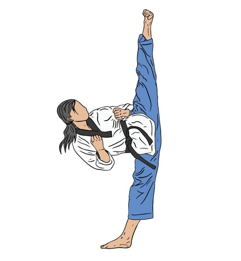

Taekwondo is a huge part of my life. It has taught me discipline, focus, and resilience. Training in this martial art has given me the confidence to push past limits, both physically and mentally.
I love competing in Taekwondo tournaments and pushing myself to improve. The feeling of executing a perfectly timed kick or breaking a board is exhilarating. Beyond the physical training, Taekwondo instills core values of **perseverance, self-control, and respect**. It's not just a sport, it's a way of life. FUN FACT ABOUT ME I CAN DO A FULL SPLIT!!
I love programming because it allows me to solve real-world problems with logic and creativity. I enjoy the challenge of coding.
I believe in using technology to drive sustainability initiatives. From composting projects to smart waste management, I strive to make an impact.
Origami has always fascinated me. The ability to transform a simple sheet of paper into an intricate, beautiful shape is magical. It requires patience, precision, and creativity.
I enjoy creating different origami models, from classic paper cranes to complex modular designs. It is both a relaxing hobby and a form of creative expression.
Crochet is another hobby I deeply enjoy. There's something incredibly satisfying about taking a ball of yarn and transforming it into something useful and beautiful.
Feel free to contact me if you have any questions or just want to chat!